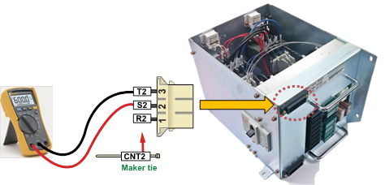

Warning
Please be cautious. Short-circuit between phases or with surrounding components can occur while measuring the high voltage.
(1) Please check the Controller¡¯s internal 3-phase power voltage.
Electrical Module (PSM or PDM) that attached at the front of controller is in charge of the distribution and replay of each power supplies and the 3-phase power supply will be turned on/off by a Magnet switch in the Electrical Module. Please examine if the input voltage to the Electrical Module is within the 10% error range of AC220V standard. If the measured voltage is out of the allowed range, please examine as below.

Figure 1.250 3-Phase Power Input to the Electrical Module
|
Warning Please be cautious. Short-circuit between phases or with surrounding components can occur while measuring the high voltage. |
1) If the input voltage to the controller is AC220V
If the input voltage to the controller is AC220V, input voltage from external to the power switch or terminal block must be same as the measured voltage from the internal Electrical Module. If there is a difference, please examine the 3-phase power supply wiring.
2) If the input voltage to the controller is not AC220V
If the input voltage specification to the controller is not AC220V, please use the internally installed transformer to convert the 3-phase voltage into AC220V and it will be connected to the Electrical Module. Please examine if the voltage of the Electrical Module is within the 10% error range of AC220V standard.
If the measured voltage is out of allowed range, please examine the input of internally installed transformer and the connection status of output terminal (socket). Primary column of the internally installed transformer must be connected with the voltage as it is displayed on a rating panel. Secondary column of the transformer must be set to AC3-phase 220V at all time. If the output from the output terminal (socket) is not AC 3-phase 220V even when the input and output terminals (socket) are connected properly, the transformer is faulty. At this stage the output voltage of transformer¡¯s error rate must be within 5 %.